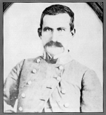

Rachel Cormany was orginally
born in Canada, but moved to Chambersburg with her husband. He soon
enlisted in the Union army. They both kept a journal of their
experiences since college days and continued throughout the war. He
diary, spanning years, is are a rare protrait of women in 19th century
america. Alone, Rachel often complained of depression and boredom in
Chambersburg. After the war the Cormanys moved to Missouri to live on a
farm.
Rachel Cormany was orginally
born in Canada, but moved to Chambersburg with her husband. He soon
enlisted in the Union army. They both kept a journal of their
experiences since college days and continued throughout the war. He
diary, spanning years, is are a rare protrait of women in 19th century
america. Alone, Rachel often complained of depression and boredom in
Chambersburg. After the war the Cormanys moved to Missouri to live on a
farm.
 Confederate general who led the
invasion in
Maryland and Pennsylvania in 1864. For a time Early was a practicing
attornery in Franklin County, which perhaps played a role in his decision
to destory the town decades later. In 1864 Jubal was ordered to invade
the North to draw Union forces away from Richmond and Lynchburg. His
raid was very success and he almost captured Washington, D.C. In his career he ransomed several cities including Hagerstown and
Frederick. Until his death, Gen. Early always stood by his decision to
burn Chambersburg as appropriate retaliation for Union destruction in the
Valley.
Confederate general who led the
invasion in
Maryland and Pennsylvania in 1864. For a time Early was a practicing
attornery in Franklin County, which perhaps played a role in his decision
to destory the town decades later. In 1864 Jubal was ordered to invade
the North to draw Union forces away from Richmond and Lynchburg. His
raid was very success and he almost captured Washington, D.C. In his career he ransomed several cities including Hagerstown and
Frederick. Until his death, Gen. Early always stood by his decision to
burn Chambersburg as appropriate retaliation for Union destruction in the
Valley.
 Union general whose
destruction in the Valley in 1864 precipitated the Burning of
Chambersburg in retaliation. While from a old Virginian family, he
turned on his home state and became one its most hated enemies.
Union general whose
destruction in the Valley in 1864 precipitated the Burning of
Chambersburg in retaliation. While from a old Virginian family, he
turned on his home state and became one its most hated enemies.
The West Point graduate was given command in the Valley in May with
orders to lay waste to the region. Hunter took this to heart and
embarked on a campaign destroying family farms, warehouses,
railroad, and stores. He entered Lexington on June 11 and set fire to
the Virginia Military Institute and Governor Letcher's home. This
unlimited warfare campaign devastated the countryside and forced the
Confederate army to respond with an invasion into the North, both for
retaliation and to relieve pressure on the Valley.
(1937-1927)Confederate general under General Early in command of a brigade Virginia Calvary who led the burning of Chambersburg with General Johnson. On July 28, 1864, he received orders from Gen. Early to ransom Chambersburg. In less than 48 hours, McCausland led the raid into Chambersburg and delivered the ransom note in front of the Courthouse. After a few hours wait, with no ransom paid, McCausland order torches to be set on the town.
After the war a warrant for his arrest was issued. McCausland
fled the county to several countries. After serving a stint in the
French Foreign Legion he returned to the U.S. in 1867 and
settled in West Virginia. While remaining in reclusion for the remainder
of his life, he did write his won account for the Philadelphia
Times, owned by Alexander McClure.
 Prominent Chambersburg citizen
involved in politics, journalism,
and abolition. A trained lawyer, he was the owner and editor of the
Franklin Repository Newspaper, and became the
leading Republican voice in the County, in opposition to the Democratic
Valley Spirit. He was a state legislator who served in the Curtin and
Lincoln administrations. "Colonel" McClure was an instrumental force in
organizing and raising volunteer units from Franklin County in 1862.
Prominent Chambersburg citizen
involved in politics, journalism,
and abolition. A trained lawyer, he was the owner and editor of the
Franklin Repository Newspaper, and became the
leading Republican voice in the County, in opposition to the Democratic
Valley Spirit. He was a state legislator who served in the Curtin and
Lincoln administrations. "Colonel" McClure was an instrumental force in
organizing and raising volunteer units from Franklin County in 1862.
During the war McClures stayed in Chambersburg and became embroiled in local politics. He was present at the meeting with General Lee in 1863 to surrender Chambersburg to the Confederate occupation. While a staunch supporter for the Union cause, he was still a gracious host who entertained many of the confederate officers at his grand estate "Norland."
McClure and his home were specifically targeted in the Burning
for his criticisms of General Jenkins conduct during the occupation of the
previous summer. After the Burning McClure sold his estate, which became
Williams College, and moved to Philadelphia in 1879.
Minister in Chambersburg who wrote articles in the local papers and a widely read account Burning of Chambersburg. He was a very prominent citizen, delivery sermons on Sunday and writing a weekly medicine column. His account of the burning was reprinted three times.
 Confederate major general who led the first raid into Franklin County
with the goal of destroying the Cumberland Valley Railroad bridge at
Conococheague Creek.
Confederate major general who led the first raid into Franklin County
with the goal of destroying the Cumberland Valley Railroad bridge at
Conococheague Creek.